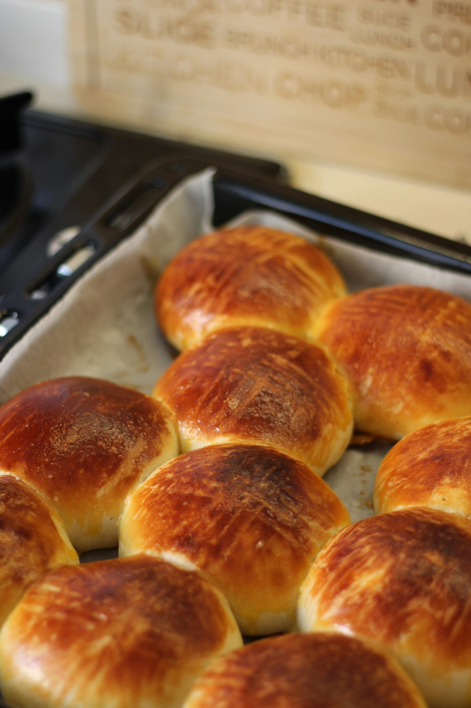

Mom's Hot Buns

Ingredients:
- 2c. Warm Water
- ¼ c. Sugar
- ¼ c. Oil
- ½ tsp Salt
- 2 Eggs (1 for mixture & 1 for egg wash)
- 1 Tbsp Yeast
- 5-7c. All Purpose Flour
- Optional – Pink Himalayan Sea Salt
Instructions:
- Preheat oven to 350 degrees
- Combine water and sugar together in a bowl and wisk
- Add Oil, Salt and Egg into bowl and wisk together.
- Sprinkle the Yeast over ingredients and lightly wisk in the yeast.
- Cover with a warm dishcloth and let mixture set for 5-10 minutes. (This will allow the Yeast to activate).
- Remove dishcloth and begin adding the Flour one cup at a time, and mix together.
- Once dough begins to form then place it on a clean surface and begin kneading it for up to 10 minutes, adding flour as needed.
- Form into a ball and place in a greased bowl
- Cover with plastic wrap and a warm wet towel over the top of the bowl.
- Let proof in a warm location for 50 minutes.
- Optional-Punch down and let rise a second proof.
- Once proofed, roll dough onto a sheet pan making individual buns (makes up to 24 rolls).
- Cover with greased plastic wrap and let rise 15-20 minutes.
- Make the egg wash, mix remaining egg with 1 Tbsp water.
- Using a basting brush, brush egg wash on each bun.
- Optional-Sprinkle pink Himalayan over the buns.
- Bake in pre-heated oven for 20-22 minutes.